| manufacturer |
|---|
| chevrolet |
| ford |
| nissan |
| honda |
| hyundai |
| lincoln |
| land rover |
| subaru |
| nissan |
| land rover |
| ford |
| honda |
| volkswagen |
| ford |
| dodge |
| ford |
| toyota |
| hyundai |
| audi |
| jeep |
Recitation 1
Introducing
The course GitHub page: https://github.com/MetuStat112
The course unofficial web-page: https://metustat112.github.io/
|
e-mail: ozancan@metu.edu.tr / ozancanozdemir@gmail.com Room No: 234 Office Hour: Wed. / Fri. 13.40-14.30 |
|
|---|---|
| Res. Assist. Ozancan Ozdemir |
Recitation 1
Statistics is the grammar of science. - Karl Pearson.
Data is a collection of information collected by observations, measurements, research or analysis. One of the main characteristics of today’s world is to be data generative. According to the estimates, at least 2.5 quintillion bytes of data is produced every day.
Question : How to make such an amount of data valuable?
Answer: Statistics!
What is Statistics?
There are several definitions of statistics in the literature.
Definition 1:
Formally: “Statistics” is the science of learning from data, and of measuring, controlling and communicating uncertainty. (American Statistical Association (ASA))
Informally: Statistics is the art of learning from data.
In statistics, we are interested in obtaining information about a total collection of the elements, which we will refer to as the population. The population is often too large for us to examine each of its members. For instance, we might have all the resident of the Ankara, or all the television sets produced in the last year by a particular manufacturer, or all the households in a given community. In such cases, we try to learn about the population by choosing and then examining a subgroup of its elements. This subgroup of a population is called a sample.
Definition 2: The total collection of all the elements that we are interested in is a called population. A subgroup of the population that will be studied in details is called a sample.
The quantity that describe the population is called parameter. The quantity that describe the sample is called statistic. It is usually impossible to have data for the entire population, and so a parameter, which defines the characteristic of the population and is a fixed number, remains an unknown number. Thus, a set of individuals or objects is collected or selected from a population by a defined procedure, and it is called sample. Luckily, a sample can provide a data in which we can calculate a quantity that can supply the best information related to unknown parameter, and this quantity is called statistic or sample statistic.
 https://bookdown.org/mcbroom_j/Book/introduction-to-statistics.html#individuals-and-variables
https://bookdown.org/mcbroom_j/Book/introduction-to-statistics.html#individuals-and-variables
Example
| Population | Sample |
|---|---|
| All resident of Turkey | All resident in Turkey who live above the poverty line |
| All residents above the poverty line in Turkey | All residents who are millionaires |
| All employees in an office | All managers in the office |
1) In the following exercises, determine whether the data set is a population or a sample. Explain your reasoning.
a ) The height of each player on a school’s basketball team
b) The amount of energy collected from every wind turbine on a wind farm.
c) The cholesterol levels of 20 patients in a hospital with 100 patients
d) The number of televisions in each household in Ankara
e) The age of every third person entering a clothing store
2) Identify the sample and the population in each of the following scenarios.
a) In order to study the response times for emergency 112 calls in Ankara, fifty “robbery in progress” calls are selected randomly over a six month period and the response times are recorded.
b) In order to study a new medical charting system at Medico, a representative group of nurses is asked to use the charting system. Recording times and error rates are recorded for the group.
c) Fifteen hundred individuals who watch The Office are selected and information concerning their education level, income level and so forth is recorded.
As stated above, data are the facts and figures collected, analyzed and summarized for presentation and interpretation. All data collected in a particular study are referred to as the data set. The following table represents a data set summarizing information of Galatasaray Football Player.
| Name | Age | Market Value |
|---|---|---|
| Muslera | 36 | 1.800.000 |
| Boey | 22 | 4.000.000 |
| Nelsson | 24 | 14.000.000 |
| Abdülkerim | 28 | 4.000.000 |
| Van Aanholt | 32 | 4.000.000 |
| Torreira | 27 | 17.000.000 |
| Oliviera | 30 | 6.500.000 |
| Kerem | 24 | 15.000.000 |
| Mertens | 35 | 4.000.000 |
| Yunus | 22 | 7.500.000 |
| Icardi | 30 | 22.000.000 |
Elements are the entities where data are collected. For the data set given above, each player is an element.
A Variable is a characteristic of interest for the elements. The data set given above includes the following two variables.
Age
Market Value
3) Please identify the element and the variable for the scenarios given below.
a) In a sociological study involving 35 low income house holds, the number of children per household was recorded for each household.
b) The number of hours spent per week on paper work was determined for 200 middle level managers. The minimum was 0 hours and the maximum was 27 hours.
Data Types
There are mainly two forms of the statistics.
Descriptive Statistics is primarily about summarizing a given data set through numerical summaries and graphs, and can be used for exploratory analysis to visualize the information contained in the data and suggest hypotheses etc.
Inferential Statistics is concerned with methods for making conclusions about a population using information from a sample, and assessing the reliability of, and uncertainty in, these conclusions.
The data types or groups are an important concept of statistics, which needs to be understood, to correctly apply statistical analysis to your data and therefore to correctly conclude certain assumptions about it.
In general attribute, we can divide data as
Quantitative data deals with numbers and things you can measure objectively. It is also known as numerical variable such as height, width, and length.
Qualitative data data deals with characteristics and descriptors that can’t be easily measured, but can be observed subjectively. It is also known as categorical variable such as smells, tastes, eye color, gender.
These two data attributes have subgroups.
Quantitative Attribute
Discrete Data: We speak of discrete data if its values are distinct and separate. In other words: We speak of discrete data if the data can only take on certain values. This type of data can not be measured but it can be counted. For example, Number of defective item in a box, Number of children in a household.
Continuous Data: Continuous Data represents measurements and therefore their values cannot be counted but they can be measured. For example, temperature, height, or weight.
Interval Data Interval values represent ordered units that have the same difference. Therefore we speak of interval data when we have a variable that contains numeric values that are ordered and where we know the exact differences between the values. It can be either discrete or continious.
The problem about the interval data is zero have no real meaning. That’s why a lot of descriptive and inferential statistics cannot be applied. For example, Temperature.
- Ratio Data : Ratio values are also ordered units that have the same difference. Ratio values are the same as interval values, with the difference that they do have an absolute zero. In other words, zero has its real meaning. For example, age, distance
Qualitative Attribute
Nominal Data: Nominal values represent discrete units and are used to label variables, that have no quantitative value. Just think of them as labels. Note that nominal data that has no order. For example, Gender: Male, Female
Ordinal Data: Ordinal values represent discrete and ordered units. As you would guess from it’s name, order have an importance. For example,
1- Totally disagree.
2- Disagree.
3- Neither agree nor disagree.
4- Agree.
5- Totally Agree.
We can also categorized data set types into several groups, For example,
Cross-Sectional: It is a collection of observations (behaviour) for multiple subjects(entities) at single point in time.
Time Series: It is a collection of observations (behaviour) for a single subject(entity) at different time intervals (generally equally spaced)
Panel Data: It is usually called as Cross-sectional Time-series data as it a combination of above mentioned types, i.e., collection of observations for multiple subjects at different time points.
Circular Data.
4) Determine whether the following variables are qualitative or quantitative.
a) The color of automobiles involved in several severe accidents.
b) The length of time required for rats to move through a maze
c) The classification of police administrations as city, county or state
d) The rating given to a pizza in a taste as poor, good, excellent
e) The number of times subjects in a sociological research study have been married.
5) Match the measurement with the data type.
| The roster of a basketball team lists the jersey numbers for each of the players. | Nominal |
| Grade of students (A, B, C, D and F) | Ratio |
| Colour of shirt | Interval |
| Weight of students | Ordinal |
6) Please determine whether the given statement is True or False.
The movie list based on IMDB ratings is an ordinal data. ( )
The height of the student in this lab is an interval data. ( )
Temperature of the body expressed in Kelvin is a ratio data. ( )
The provinces that the students in this lab come from are nominal data. ( )
Descriptive Analysis of Categorical Data
Descriptive analysis of the data includes both numerical and graphical representations of our findings. The type of the method that you apply for descriptive analysis changes based on type of the data that you are working with. This part introduces tabular and graphical methods commonly used to summarize categorical (qualitative) data.
Summarizing Qualitative Data
One Categorical Data
When we are interested in only one categorical variable (nominal or ordinal) we can use frequency, relative frequency(proportion) or cumulative frequency. Since these statistics are represented in a table format, it is called frequency table, relative frequency (proportion) table, etc.
Frequency Distribution: A frequency distribution is a tabular summary of data showing the number (frequency) of items in each of several non-overlapping classes. For example, the manufacturer list of 20 cars in KKM is given below.
| Var1 | Freq |
|---|---|
| audi | 1 |
| chevrolet | 1 |
| dodge | 1 |
| ford | 4 |
| honda | 2 |
| hyundai | 2 |
| jeep | 1 |
| land rover | 2 |
| lincoln | 1 |
| nissan | 2 |
| subaru | 1 |
| toyota | 1 |
| volkswagen | 1 |
Comment: We see that Ford the leader, Honda, Hyundai, Land Rover and Nissan are second.
Relative Frequency: A frequency distribution shows the number (frequency) of items in each of several non-overlapping classes. We are often interested in the proportion, or percentage, of items in each class. The relative frequency of a class equals the fraction or proportion of items belonging to a class.
Relative frequency makes your data more interpretable.
\[ \text{Relative Frequency of a class} = \frac{\text{Frequency of class}}{n} \]
| Var1 | Freq |
|---|---|
| audi | 0.05 |
| chevrolet | 0.05 |
| dodge | 0.05 |
| ford | 0.20 |
| honda | 0.10 |
| hyundai | 0.10 |
| jeep | 0.05 |
| land rover | 0.10 |
| lincoln | 0.05 |
| nissan | 0.10 |
| subaru | 0.05 |
| toyota | 0.05 |
| volkswagen | 0.05 |
We can say that 20% of the car in KKM are produced by Ford.
7) Please consider the data set given below.
Warning: package 'vcd' was built under R version 4.1.3| ID | Treatment | Sex | Age | Improved |
|---|---|---|---|---|
| 57 | Treated | Male | 27 | Some |
| 46 | Treated | Male | 29 | None |
| 77 | Treated | Male | 30 | None |
| 17 | Treated | Male | 32 | Marked |
| 36 | Treated | Male | 46 | Marked |
| 23 | Treated | Male | 58 | Marked |
The variable expressions are given below.
ID: patient ID.
Treatment: indicating treatment (Placebo, Treated).
Sex: indicating sex (Female, Male).
Age: age of patient.
Improved: ordered factor indicating treatment outcome (None, Some, Marked).
a) Interpret the given output below.
| Var1 | Freq |
|---|---|
| Placebo | 43 |
| Treated | 41 |
b) Interpret the given output below.
| Var1 | Freq |
|---|---|
| Placebo | 0.5119048 |
| Treated | 0.4880952 |
c) What is the problem with the output above? How to solve it?
In addition to the numerical representations, the visualization of the categorical data can help the researchers to deliver the information in the most efficient way possible. To display the one categorical variable, you can use
bar plot
pie chart
doughnut chart
Bar Plot: A bar plot or bar chart is a graphical device for displaying qualitative data summarized in a frequency, relative frequency, or percentage frequency distribution. One one axis of the chart (usually the horizontal axis), we specify the labels for the classes (categories) of data. A frequency, relative frequency or percentage frequency scale can be used for the other axis of the chart (usually the vertical axis)
Warning: package 'ggthemes' was built under R version 4.1.2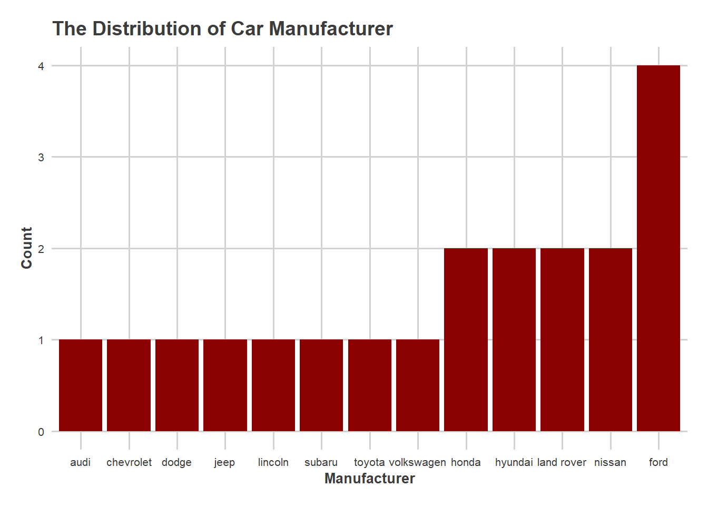
Comment: It is seen that Ford has the highest number of car in KKM garage. It is followed by nissan, land rover, hyundai and honda.
Pie Chart: It is another way of presenting relative frequency and the percentage frequency distribution of the qualitative data. It may be a good option when your categorical variable has a few number of levels (For example: Answer is your variable, and it has only yes and no), but it is not generally preferred in the data visualization world.
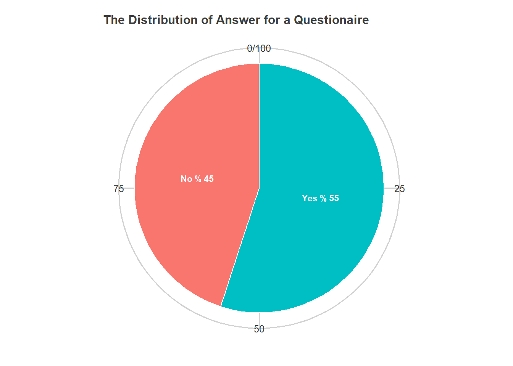
Comment: 55% of the participants say yes, while 45% of them say no.
Doughnut Chart: A doughnut or donut chart is a ring divided into sectors that each represent a proportion of the whole. It is very close from a pie chart and thus suffers the same problem.
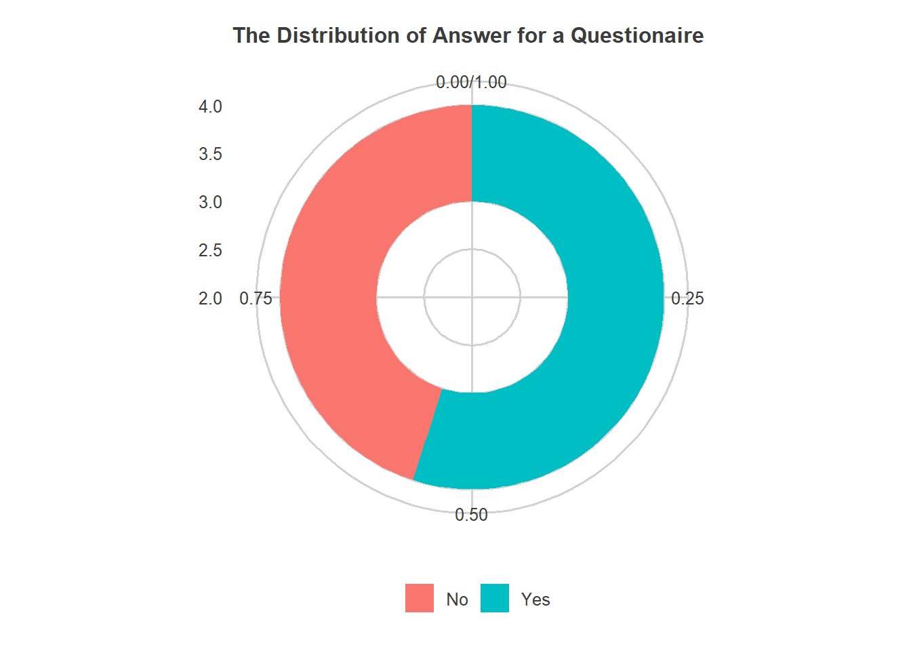
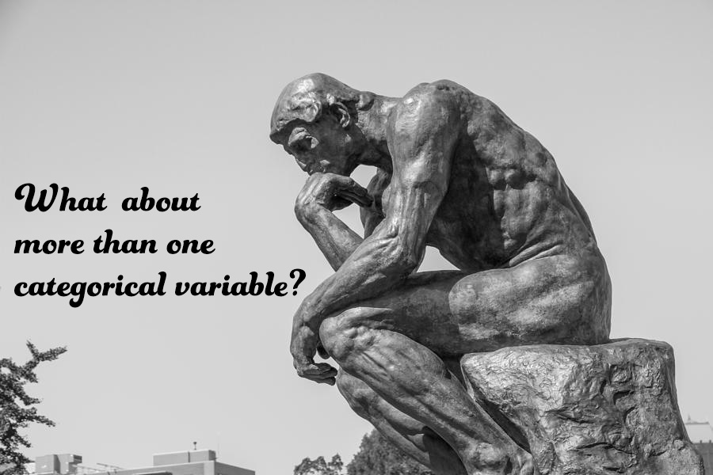
It is possible to include more than one categorical variable in the analysis at the same time, luckily. If you are displaying two categorical variables, you construct a contingency table.
Contingency Table: It is a way of displaying the frequency distribution of two categorical variables. It is a powerful tool for the comparison and exploring the association between two categorical variables, especially. Although it is generally used for categorical variables, we are able to apply this approach to discrete, even continuous variables.
| 4 | 6 | 8 | Sum | |
|---|---|---|---|---|
| e | 0 | 0 | 1 | 1 |
| p | 1 | 2 | 1 | 4 |
| r | 6 | 3 | 6 | 15 |
| Sum | 7 | 5 | 8 | 20 |
This is 3x3 contingency table where rows represent the fuel type of the car and columns denotes the number of cylinders of the 20 cars in 5KKM garage.
Comment: We can say that almost 33% of cars are R fuel type and 8 cylinder. It can be also said that almost one out of three cars are R fuel type and 4 cylinders. Only 8 cylinder cars has three fuel types while 4 and 6 cylinder cars have P and R fuel type.
It is also possible to include more than two categorical variables by displaying its frequencies on the same table, and it is called N-way table where N represents the number of categorical variables in the table.
You can use the following graphs to illustrate the at least two categorical variables visually.
Clustered or Stacked Bar Chart
Spine Plot
Mosaic Plot
Clustered and Stacked Bar Plot: Clustered and Stacked barplot display a numeric value for several entities, organised in groups and subgroups.
Let’s visualize the table representing the fuel type of the car and columns denotes the number of cylinders of the 20 cars in KKM garage using this chart.
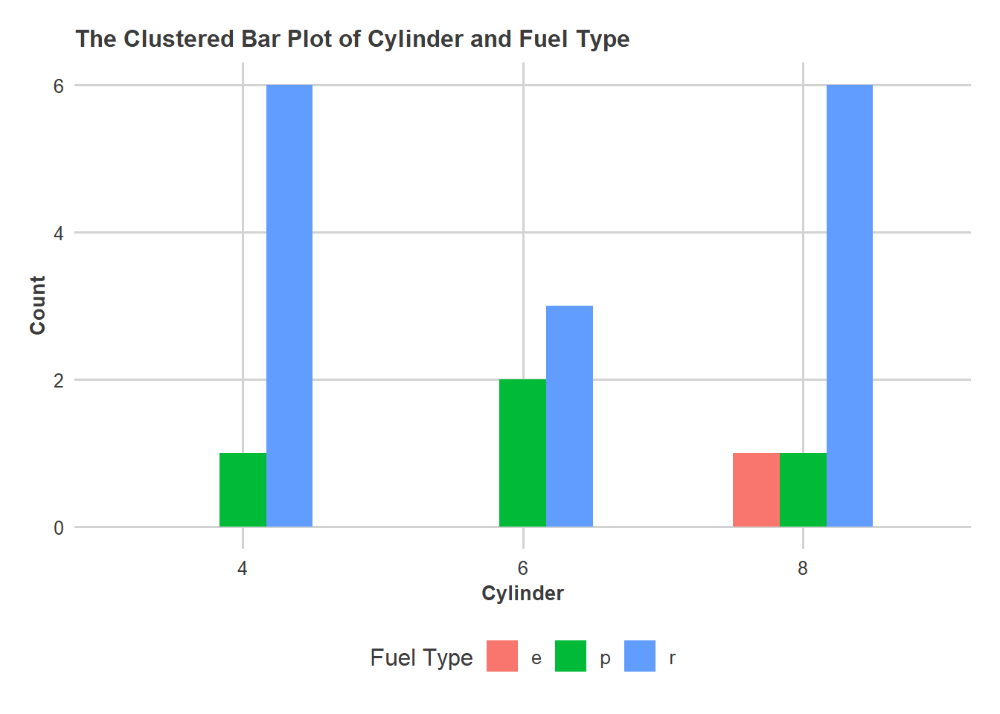
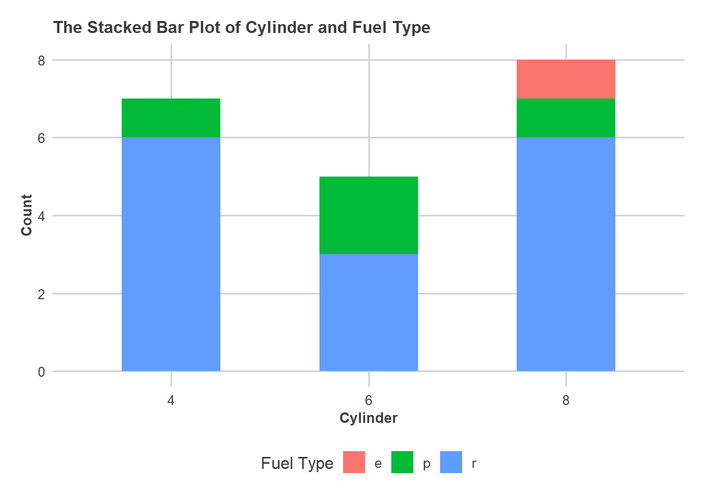
Mosaic Plot: A mosaic plot is a graphical display of the cell frequencies of a contingency table in which the area of boxes of the plot are proportional to the cell frequencies of the contingency table. This procedure can construct mosaic plots for up to four-way tables.
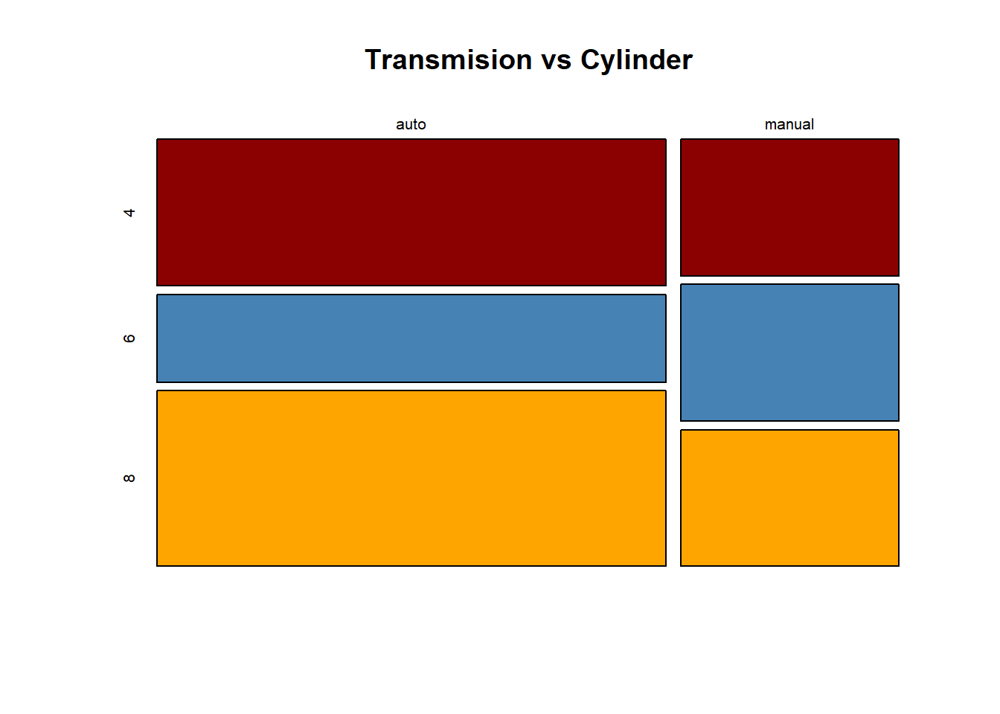
Comment: The plot shows that most of the car are automatic transmission. It is seen that the distribution of cylinders are almost equal in manual tranmission car, but the proportion of 8 cylinder cars is slightly greater than the other types in automatic transmission.
Spine Plot: Spine plots are a generalization of stacked bar plots where not the heights but the widths of the bars corresponds to the relative frequencies of x . It is a specific type of mosaic plot, but it can be used for only two variables. Also, one of variables here can be either numerical or categorical where one of them has to be categorical.
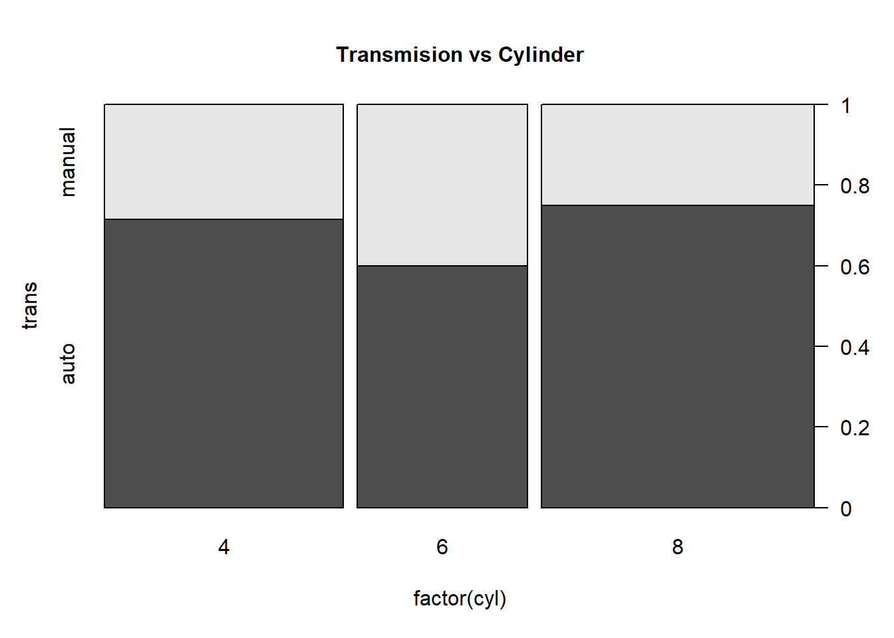
8) Consider the data set in Question 7. Please answer the following questions and interpret the outputs, if necessary.
a) Please classify type of the variables in the data. (Categorical or Numerical, Nominal or Ordinal, Interval or Ratio)
| Var. Name | Categorical | Numerical | Nominal | Ordinal | Interval | Ratio |
|---|---|---|---|---|---|---|
| Treatment | ||||||
| Sex | ||||||
| Age | ||||||
| Improved |
b) Can we calculate the mean of the age variable? Explain your reason.
c) Assume that improved variable is represented by number.
0: None
1: Some
2: Marked
Which statistics can be used to measure the central tendency of this variable?
d) Please interpret the following output.
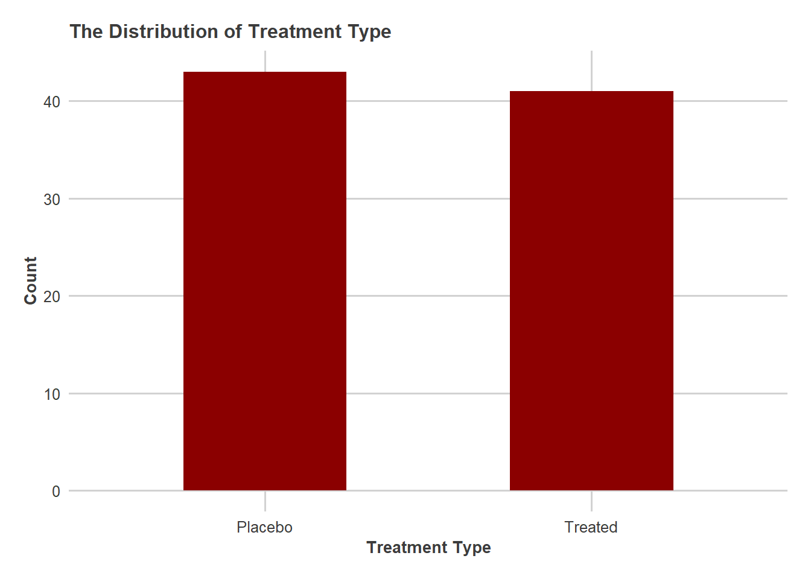
e) The sex column of the data has two attributes, “Female” and “Male”. Do you prefer pie chart or donut chart to represent the distribution of the sex column? If you say yes, you use whether frequency or relative frequency. If you say no, explain why?
f) Please interpret the following output.
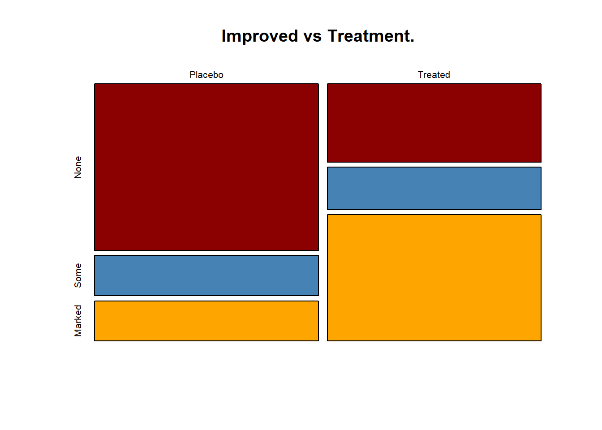
g) Please interpret the following tables.
None Some Marked
Placebo Female 19 7 6
Male 10 0 1
Treated Female 6 5 16
Male 7 2 5 None Some Marked
Placebo Female 0.23 0.08 0.07
Male 0.12 0.00 0.01
Treated Female 0.07 0.06 0.19
Male 0.08 0.02 0.069) Please answer the following questions.
9.1) What is the definition of the statistics.
a ) Science of Collecting , organizing ,analyzing , interpreting Data
b) Science of Data
c) Collection
d) Analyzing
9.2) Descriptive Statistics is useful for
a) comparing the statistical events
b) comparing two different samples
c) describing the quantitative characteristics of variables
9.3) A ___ is a small portion of the population used to gather data from.
a) Systematic Sampling Method
b) Sample
c) Population
d) Bias
9.4) What would be the sample in this example?
Surveyors in a mall choose shoppers to ask about products they prefer.
a) the surveyors
b) all shoppers in the mall
c) the shoppers who were asked their preferences
9.5) How old are you?
a) Categorical
b) Numerical
9.6) In which month were you born?
a) Categorical
b) Numerical
9.7) The number of orange Skittles in a bag.
a) Discrete
b) Continuous
9.8) Which level of measurement is used to measure the size of different size M&Ms?
a) Nominal
b) Ordinal
c) Interval
d) Ratio
9.9) What level of measurement is used to measure shoe size?
- Nominal
b) Ordinal
c) Interval
d) Ratio
9.10) The chart given below gives the demographic and socioeconomic characteristics of adult smokers in upstate New York in 2006. Use it to determine if the following statements appear to be true. Answer yes or no.
a) A higher proportion of men than of women are current smokers.
b) The longer a person has been out of work, the more likely that person is a smoker.
c) The more education a person has, the more likely that person is to smoke.
d) Ethnicity does not appear to be related to smoking prevalence.
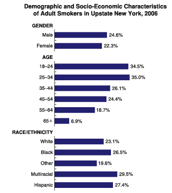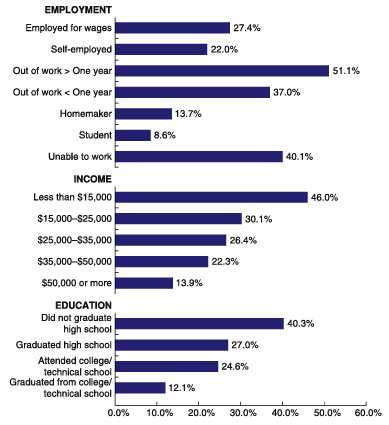